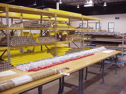
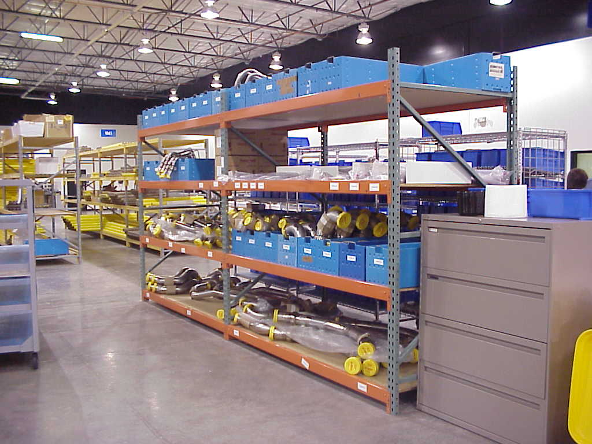
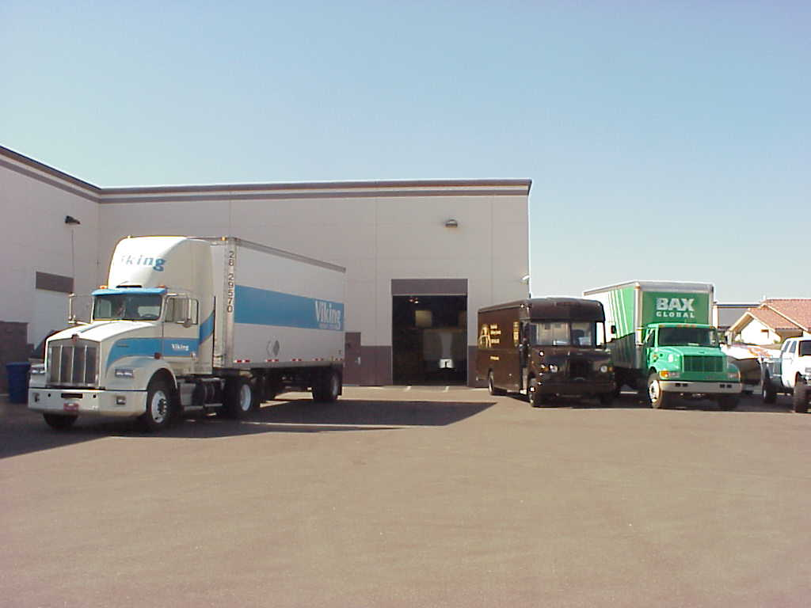

|
|
Total
Inventory Management

Today’s
demanding manufacturing environment is one of constant cost analysis, continuous
improvement and greater resiliency requirements within the supply chain.
OEM Logistics is focused on managing virtually every step within the
supply chain cycle. We offer our clients the ability to outsource many of the
supply chain functions and provide additional value to their customers while
reducing the internal costs associated with logistics and supply chain
management.
 OEM’s
Administrators/Expeditors track product from placement of purchase order to
delivery of product, ensuring that commitments are met and all product is
on-hand to support the production need dates.
Upon product receipt at either OEM’s location or at our client’s
facility, we conduct a receiving inspection to verify the accuracy and
completeness of the order. We then
stock the product in either our customer’s inventory system or into OEM’s
automated inventory control system. OEM
tracks and updates these inventory reports on a daily basis to ensure accuracy.
Per
the customer’s Master Production Schedule (MPS), product
is pulled from inventory and staged for a final-out quality inspection, kitted
and prepared for delivery. Following delivery,
all
related documentation for each order is retained for a minimum of 1 year on site
and 7 years off-site per ISO requirements. This
documentation package includes the sales
order, Certificates of Compliance for detail parts, First Article Inspection
Reports (FAIR), shipper, bill of lading, and OEM’s internal work traveler. In each case, p
arts
are individually packaged per the customer’s specific requirements, and when
applicable
8130
Tags are issued by OEM’s FAA Approved Organizational Designated Airworthiness
Representative (ODAR).
 Our
customer’s shipper is cut/closed on-site by OEM’s production control
administrator and the product is shipped either to our client or
directly
to our client’s end-user per the need date.
Many
times, orders are processed in advance of the due date and placed in OEM’s
“early ship” area. This supports on-time delivery by allowing product to be
pulled and shipped as soon as the customer due date arrives.
By managing the entire process, we are able to streamline the approach
and significantly compress cycle times. Because
this is our core competency, we are also able to exercise greater flexibility to
our clients, thus, allowing them to provide a more resilient offering and
increased value to their end-user customers.
Aerospace Logistics, Quality and Assurance
ISO9002 Certified
|